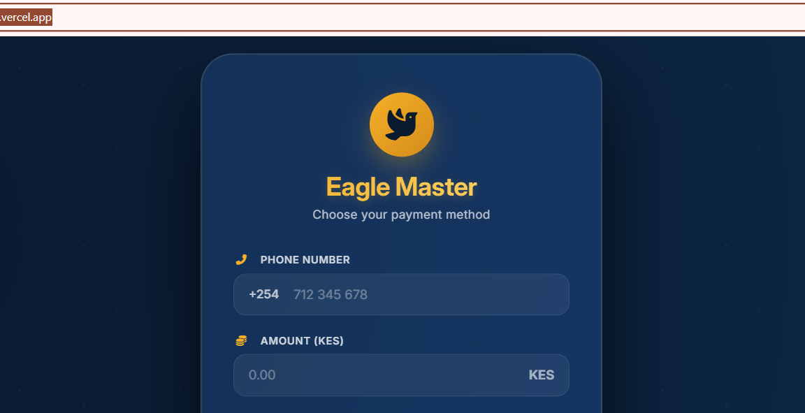
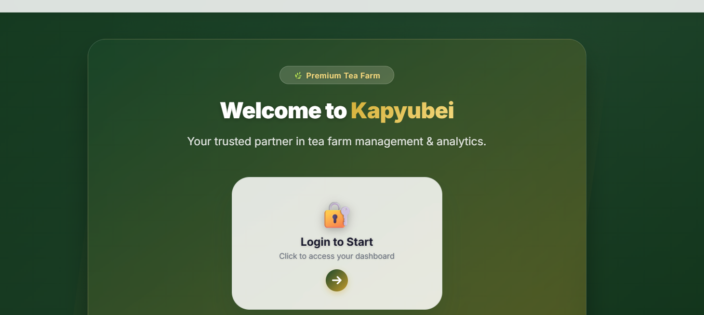
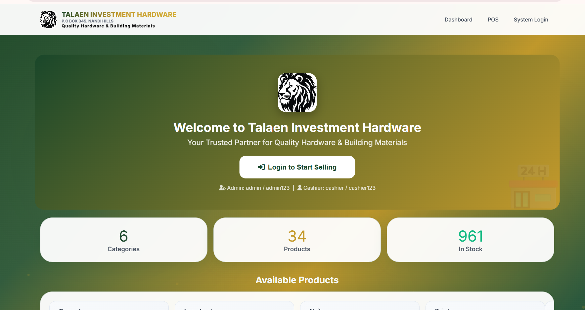
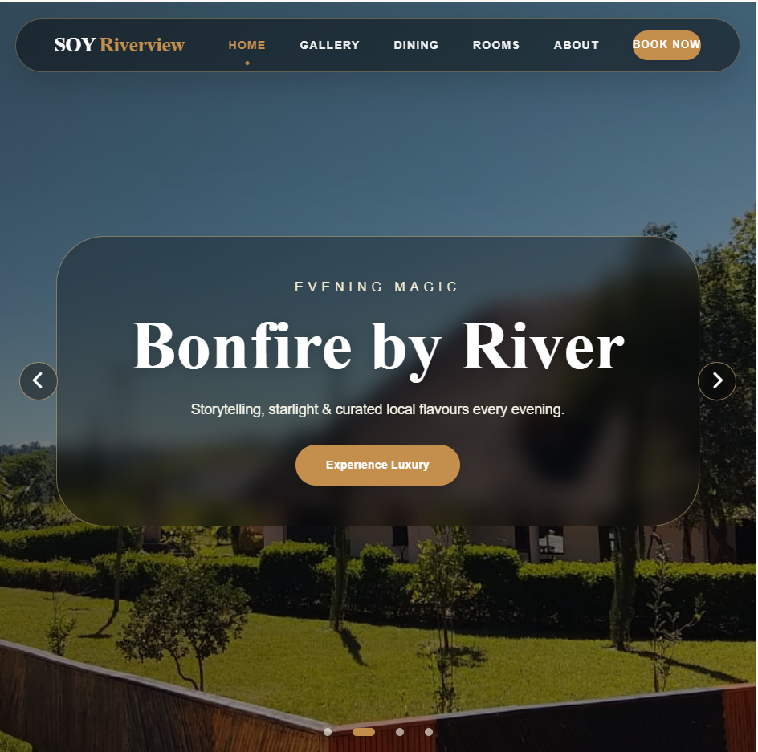
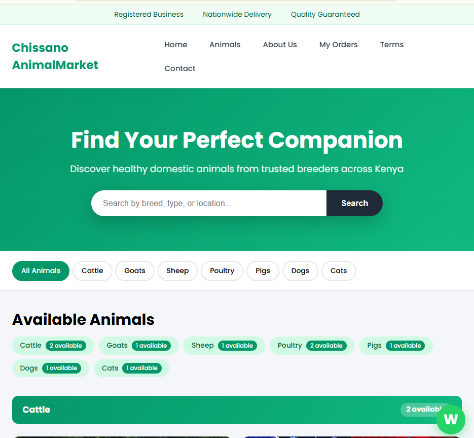

Flagship Expeditions
Live projects, systems, and networks I have engineered.

Live STK Push Payment System
Real-time mobile payment processing system integrating with M-Pesa's STK Push API. Enables businesses to initiate payments directly from their platforms with instant confirmation via WebSockets. Built with Python/Flask, React, and real-time notification infrastructure.

Kapyubei Tea Farm Management
End-to-end plantation system tracking harvest cycles, worker allocation, and supply chain logistics. Real-time yield monitoring with predictive maintenance.

Talaen Hardware Management
Comprehensive inventory and sales platform with barcode scanning, automated reorder triggers, and multi-branch sync. Built with Laravel, MySQL, and RESTful APIs.

Riverview Resort Website
Immersive booking platform with dynamic availability, M-Pesa/Stripe payments, and virtual tour. Built with React, Next.js, and headless CMS.

Chissano Animal Market
Full-featured livestock e‑commerce marketplace with authentication, real‑time bidding, chat, and geo‑tracking. Built with Flask, MongoDB, and WebSockets.

Network Monitoring Suite
Real‑time topology mapping with anomaly detection. Full‑stack React + Node.js + WebSockets for live packet analysis and automated alerting.

Legacy System Migration
Zero‑downtime migration from monolith to microservices (Docker/K8s) with CI/CD pipelines, blue‑green deployments, and automated rollback.